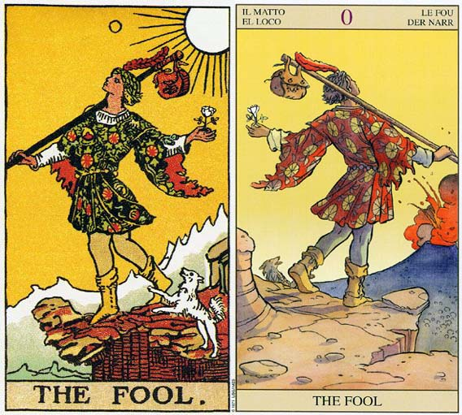

塔罗牌愚人牌面故事
愚人是塔罗学习者相当熟悉的一张牌。愚人穿着色彩斑斓的服装，无视于前方的悬崖，昂首阔步向前行。他脚边的小白狗正狂吠着，似乎在提醒他要悬崖勒马（又好像随他一同起舞）。无论如何，愚人仍旧保持着欢欣的神色，望向遥远的天空而非眼前的悬崖，好像悬崖下会有个天使托住他似的。事实上，在某些版本的塔罗牌中，伴随愚人的是猫甚至鳄鱼，不管是什么，这些动物都象征着本能。动物凭本能行事，愚人也是。愚人左手持着一朵白玫瑰（在Universal Taro版本中，是红玫瑰），白色象征纯洁，玫瑰象征热情。他的右手则轻轻拿着一根杖，包袱即系于其上。那根杖可不是普通的杖，它是一根令牌，象征力量。请注意他拿杖的方式是如此漫不经心，迥异于魔术师的紧紧握住，而与世界牌有异曲同工之妙，只不过，世界牌是旅程圆满的达成，牌中人物才自在地拿着权杖跳舞，但除了愚人，有谁会拿着一根魔法令牌来挂包袱呢？愚人的包袱里装的是他的经验，所以他也不是完全的愚蠢，只是不被经验所控制。他头上的桂冠即是明显代表成功的可能。至于包袱上的图案意义目前有些争议，有人说是鸟，象征愚人牌本身所属的风元素（注：愚人牌属于风元素是金色曙光系统的说法）。Paul Foster Case在TheTarot-书中也说是老鹰；Rachel Pollack在Seventy-Eight Degreesof Wisdom-书中也说是老鹰的头，象征本能与向上提升的灵魂。远方的山脉象征他前方未知的旅程，白色的太阳自始自终都目睹着愚人的一举一动——他从哪里来？他往何处去？他又如何回来？韦特说，愚人是追寻经验的灵魂。
塔罗牌愚人解释
1.0愚者(THE FOOL)塔罗牌的第一张，也是起点。愚者的生活态度是无拘无束的，充满冒险精神。愚者心中有理想为“现在”而奋斗。大雅克那中第一张是「0」的愚人，0表示没有，就好像一无所知，牌中这个拖著小狗的青年，看来是为著实现一个动人的宏大构想，而展开旅程，可是我们从图中看，他正走在悬崖边！真叫旁人为他抹把汗，可是他却彷彿并不察觉自己身处险境，还是那麽游然自得。莫非他真的相信「傻人有傻福」？如果是，他就是一个真正的大傻瓜。
2.愚人牌暗示着你现在不顾风险而有所行动。愚人代表迈向知识、和平和解放的第一步。这张牌画一个旅行者站在悬崖边缘，双眼凝视天空，脚畔有一条狗吠叫着，左手上有一朵白玫瑰，跨在右肩的棍子上吊着一个袋子，里头装着他的行李。
3.这张牌的图案，是一个身着滑稽衣服的人手持白玫瑰，带着随身的行囊快活地站在悬崖边。这是张有点争议的牌，一切都不是很明确，好坏相间，非常容易解错。有人说愚者有颗天真且纯真的心就如同那白色的玫瑰花一样——那么的自然那么的纯净；也有人说他十分愚蠢，缺乏理性判 断的能力，做任何事都凭直觉，没有拒绝和抵抗的能力，就是愚蠢、冲动和虚无的代表。塔罗牌愚人解释
4.轻便的行囊中带着他过去的经验与知识，让他在面对未来时不会害怕。虽然旁人也会不时提醒他将要面对的危险，但是这丝毫不会降低他对未来的好奇心与求知欲。即便这是他的第一步，他都会充满了信心走下去。虽然他不知道未来，更不知道前方隐藏的危险，但这都不重要，因为他走过去就自然会知道了。
5.愚者是一个不受世俗规范约束的人，所以这张牌代表了自我。它暗示你虽然活在尘世中，但仍然有一颗纯洁的相信梦想的童心，为了心中的梦甘愿去面对凶险的未来。这张牌告诉你只要你还有梦想，就要去努力把它变成现实，冒险又算得了什么？
塔罗牌愚人牌面解释
1.愚人穿着色彩斑斓的服装，无视前方的悬崖，昂首阔步前行。他狡辩的小白狗正狂吠着，似乎是在提醒他要悬崖勒马，又好像是在跟他一起无忧无虑的嬉戏。
2.总之，愚人仍旧保持着欢悦的神色，望向遥远的天空，对于脚下的悬崖视而不见，就好像悬崖崖边有一座透明的浮桥一样。一切皆源于本能，无知无惧，或许就是愚人的写照吧！在愚人的左手握着一朵白玫瑰，象征愚人内心的纯洁和火一般的热情。
3.愚人右手系着包袱的木棒正式魔术师（大阿尔卡那1号牌）手中的魔杖，相传拥有操控世界的魔力，但此时却成了愚人手中的一个玩物。或许是因为愚人并不知道他的威力，又或许是大智若愚无视力量的存在，除了愚人自己，恐怕不会有第二个人知道。愚人包袱里面装满了他的经验，所以愚人并不愚蠢，只是不为经验所控，求一糊涂罢了，这可能就是我们常说的难得糊涂。
4.放眼远望，使连绵起伏的山脉，那便是愚人位置的旅途，有太多的故事等着愚人去经历，有太多的知识等着愚人去感悟，就像伟特说的那样“愚人是一个追寻经验的灵魂”。
塔罗牌愚人（The Fool）解牌参考
正位
1．愚蠢而无知，缺乏纪律性和稳定性，正在成长的混乱状态。
2．精神状态处于无我状态，有些兴奋过度，对周遭的危险毫无知觉。
3．充满希望，不被四周环境所桎梏，勇敢地表达自己的想法。自信无比，乐天。
4．艺术家般的状态，心态非常忘我。
5．纯真甜美的恋情。
逆位
1．比正位的愚人更加近似于愚蠢和鲁莽。歇斯底里，疯狂。
2．丢失了手边的许多机会，而使得很多危险缠上身，却依然没有察觉。
3．缺乏信心，感情陷入低谷，无法继续恋情。
4．纯洁逐渐失去，心灵无法得到满足，开始堕落。
5．计划出现问题。
愚人正位释义
1.基本含义—好冒险、寻梦人、不拘泥于传统的观念、自由奔放、一切从基础出发、四处流浪。
2.恋爱婚姻—自由恋爱、不顾及他人看法、以独特的方式获得成功、轻易坠入爱河、浪漫多彩的爱情、独特的恋人、等待交往机会。
3.工作学业—热衷于事业或学业、以独特的方式取得意外的收获、由于好奇心对当前的学业产生浓厚的兴趣、把握重点、寻求捷径、倾向于自由的工作氛围、适合艺术类工作或从事自由职业。
4.人际财富—以轻松的方式交友、于旅途中结交新的朋友、因张显个性受他人欢迎、投资上孤注一掷不计后果。
5.健康生活—寻求独特的保健之法、张显自我的着装方式、适合休闲装或运动装。
6.其他—没有目的的旅行、憧憬自然的地方、毫无目的地前行、喜欢尝试挑战新鲜事物、四处流浪。
愚人逆位释义
1.基本含义——情绪低落、遭受失败、漫无目的的四处流浪、行为散漫、愚昧的行动。
2.恋爱婚姻——心情空虚、轻率的恋情、无法长久持续的融洽感、不安的爱情的旅程、对婚姻感到束缚、彼此忽冷忽热、不顾众人反对坠入爱河、为恋人的负心所伤、感情不专一。
3.工作学业——成绩一落千丈、没有耐心、行事缺乏计划、经常迟到、猜题错误导致考试失利、考前突击无法为你带来太大的效果。
4.人际财富——因过于单纯被他人轻视、被旁人视为怪胎、言行怪癖不合常理、粗心大意、行事无节制、缺乏理财观念、愿望难以达成、收入除渐趋于稳定、财务操作毫无计划。塔罗牌愚人解释
5.健康生活——不重视自身健康、生活不规律、因贪玩影响健康。
6.其它——旅途中断、兴趣广泛、不脚踏实地、无视旁人眼光、冲动行事、行为不检点。
愚人大体上的意义
愚人是一张代表自发性行为的牌，一段跳脱某种状态的日子，或尽情享受眼前日子的一段时光。对旅游而言，这是一张积极的牌，暗示你将会活在当下，并且会有和生命紧密结合的感觉。
“每天都充实，乐趣便在其中”是一句很适合这张牌的古谚语。当你周遭的人都对某事提防戒慎，你却打算去冒这个险时，愚人牌可能就会出现。例如，“噢，我认为现在是换工作的好时机，外面到处都是失业的人哪！”或者“什么！你们俩分开了？你到底在想什么啊？”
冒个险！不论如何都要做做看。愚人暗示通往满足之路是经由自发的行动，而长期的计划则是将来的事。
愚人（The Fool）两性关系上的意义
在两性关系分析当中，愚人暗示一段生活在当下或随遇而安的时期。你可能即将私奔，或在旅行途中遇到一位伴侣，或即将遇到一位喜欢目前生活，而不想计划将来的伴侣。
愚人有时候也可能是在形容伴侣。这个伴侣是难以捉摸的、天真的，或者不愿受到任何长期计划和关系的约束。
倒立的愚人
1.当愚人倒立时，暗示当你被要求有所承诺时，却想从责任当中寻求解脱。你正在找一个脱身之道，然而目前并不是这么做的时机。现在是你对自己的将来有所承诺，或是解决过去问题的时候了，如此你才能够重新过着自发性的生活。在你能够安全出发之前，还有某些未完成的事情需要你去处理。
2.愚人牌可能暗示无法凭直觉行事或是逃避责任。你也许渴望自由，渴望以往过去、不顾将来，但这不是适当的时候。有时候它也可能是在形容由于恐惧，而没有在某些决定的时刻把握住机会，或是固执于以前所做的计划，或过分依赖他人的建议。
3.再次，时机是关键之所在。而愚人倒立则很明确的显示时效掌握欠佳。要不是在机会来临没有行动，就是在不恰当的时间采取行动。
4.愚人牌倒立的一个案例
六个月前占卜师帮一名女士进行一次分析。占卜师向她描述一位大约二十几岁，性情激昂，有着蓝眼珠和红棕色头发，而且可能是射手座（权杖骑士和节制牌）的男人，可能很快就会走进她的生活里，而她也将有机会和他发展恋情。
后来她遇到了一位和占卜师向她形容的机会是一模一样的人。她经常和他约会，指导她发现他是处女座的。她就放弃了这个机会，并等待我所描述的射手座男子。她问占卜师这么做是否算是明智之举，因为自从那次之后，也没有射手座男子的出现。
占卜师简直不敢相信有人会对分析做这样逐字的解读，而且占卜师告诉她，在五项特征中有四项相符，就算是个不错的预测了。占卜师请求不要追究我没有特别强调“可能”这两个字，她有她的自由意志啊。
这个女人来做塔罗牌分析咨商时，似乎就决定放弃她的自由意志了。当她可以转进一个对她有利的情况时，她太过依赖占卜师给她的建议、太不重视自己的判断了。
愚人在工作方面的启示
1.愚者的原型是个孩子，一切重新开始。
2..刚开始谋职的、给别人当学徒的、还没有变成老鸟的，都是孩子。
3.当学徒是好的，当青少年是必经的，但是一辈子要人包容你的疯癫傻气、冲动任性，需要很多很多运气的——即便你再有才气。
4.年轻、热情、有朝气，这是相信万事可成的年纪，也是真正有梦的年代。
5.还没有沾惹“社会化”的油渍，也没有既定的组织框架，他充满自信，是个快乐向前行的乡下青年。
6.他当然是有创意的，谁在无拘无束的时候是没有创意的呢？哪怕只是安静地面对一朵小花。
7.他也许不懂世俗的“礼数'也许不够“上道”，更不可能“见风转舵”、“明哲保身”，可是他是无害人之心的。
8.他甚至不懂自保，被背叛、辗压时，都还“不知道自己怎么死的”。
9.新人——或新投入某个领域、决心东山再起的人——都应该扮演孩子。
10.还是新鲜人，硬要扮老鸟、装老大，闷不吭声耍酷，不智，可笑，危险。
11.小树刚发出嫩芽，便对土地、水、风和天空说：“我长大了，你们别管我，我不需要你们！”就是这么难看。
12.职场不是幼儿园，土地、水、风和天空可能笑一笑就去把机会给别人了。留下一棵狂妄——尽管于他自身是“有梦”——的小树，慢慢枯萎。
13.来不及长大，就老了。因为得不到养分（知识与贵人），小树是不能成为大树的。
14.愚者的乐观进取，用在反面就变得自我中心、自以为是，所有的自信变成愚痴，所有的不拘细节变成标新立异。
15.这种人，当然容易被打压，老板看得惯，同事也可能看不惯。同事能接受，也许主管不能容忍。
16.能“接受”、“容许”，在讲究绩效、制度、传统的地方，要进一步被重用、升迁，恐怕就难了。
愚人(伟特塔罗篇)
和SolaBusca塔罗以及金色曙光系统相同，伟特将愚人编制为阿拉伯数字的0，而其他塔罗大牌则都为罗马数字。在传统塔罗中愚人是没有数字的，而solabusca的愚人却有。在传统的塔罗纸牌游戏中，愚人是一张野牌，不属于大牌牌组之列，但是在游戏时可以取代大牌中的任何一张牌(相当于扑克中的百搭牌)。因为愚人是没有数字的，所以Levi觉得他可以自由的安排愚人的在大牌中的位置，于是他就将愚人至于倒数第二张也就是世界牌之前，同时对应希伯来字母Shin。那么在伟特出版的书《ThePictorialKey totheTarot》里的第一部分中，他也是将愚人的位置放在倒数第二张，但是在书的第二部分，他却又把愚人至于首位。同时在伟特对大牌的序言中说他对愚人的这两个位置均不满意。但我们现在如果买一副伟特塔罗牌，就会发现，愚人在牌中则是放在大牌的倒数第二个位置。
在《The Mystical Tarot》一书里，现在塔罗学者RosemaryEllenGuiley说了这样一个故事，伟特牌的画家Smith(史密斯)主张将愚人置于大牌的首张，反对伟特将其至于倒数第二张，基于此，史密斯拒绝在愚人这张牌上签名(伟特牌的每一张牌的右下角均有史密斯Smith的签名)，但当我们仔细的检视这张牌时，我们又可以模模糊糊发现貌似Smith签名特征的字母图形，具体位置是在悬崖侧面代表阴影的线条，但是要知道78张牌除愚人以外的每一张牌史密斯都留有清晰的地方给自己签上大名，唯独愚人这张牌她将自己的签名藏的非常隐蔽。这个细节也许代表了史密斯的不满。有一些人声称希伯来字母Shin的符号以圆圈的形式有在愚人的外衣右边的袖口上出现，其实这很难说一定是Shin的符号，只是有那么点像而已，另外如果上面的那个故事是真的，那么Smith自然不可能将Shin画上去。塔罗牌愚人解释
在金色曙光的对应体系中，愚人、吊人和审判三张牌分别对应了四元素中的风、水和火，而其他大牌则对应了黄道星座或行星，这也显示出这三张牌在大牌牌组中与其他大牌的差别。塔罗历史学家Decker和Dummett分析了伟特一开始写的塔罗书《TheKeytotheTarot》，发现伟特将这三张牌视为一个独特的牌组分别代表了神秘学追求的三个阶段：当愚人在首位时他是一个崭新的灵魂，但当愚人在倒数第二个位置时则是一个经历审判所挽回的灵魂，伟特将他称为“来自另一个世界到这个世界来旅行的王子”。史密斯的图像显示愚人在山的高处享受着风的洗面。作为一个新生，他将要从悬崖坠落，但他依旧跨步向前而无视前方；作为一个大师，他即将攀爬顶点，是神圣核心的象征，重新获得他的纯洁与清白。他的试炼已经结束，可以自在的享受黎明后破晓的阳光了。
史密斯对愚人的描绘看起来是受到了SolaBusca塔罗中圣杯5图像的影响，SolaBusca的圣杯5中的那人也是以类似的表达方式将头抬着对着天，肩上挑着包包，身后也有一只小狗。在史密斯的愚人图像里她改变了马赛塔罗中愚人所用的竿和包，画成了用木棒挑着的类似旅行包的包，另外将狗画成了愚人的同伴。较早版本的伟特牌里那个包包上所标的老鹰头图案有些模糊不清，这个老鹰头象征的是埃及的太阳神Horus。愚人的左手持着一枝白玫瑰，这是金色曙光象征沉默和重生的符号。愚人的外衣上饰满了水果和花花的图形，小狗则是他快乐和欢欣的同伴。愚人帽子上的羽毛是风元素的象征，这根羽毛指向太阳，象征启迪与开悟。愚人没有看向太阳是不是因为他的愚蠢和无知、是不是因为他专注于自己的课题而无需直接接受太阳之光？要决定愚人解读中代表什么意思，那就看愚人两侧的牌吧，特别是愚人所面对的那张牌。
塔罗牌愚人(古塔罗篇)
首先我们来看一下愚人的数字编号，在标有数字编号的塔罗牌种里，愚人往往被注为0或者没有编号，正确的来说，愚人应该是没有编号的，因为塔罗大牌的编号使用的是罗马数字，而罗罗马数字中是没有0这个概念的。所以这也进一步证明了愚人其实是没有数字的。所以严格的来说，塔罗大牌的结构应为“21张标有罗马数字序号的牌和一张没有数字序号的愚人牌组成”。
既然提到了0，我们就顺便说一下0这个数字。
0是一个重要而极具优先性的数字，因此可以代表不可知的上帝，上帝本身就是先于其他任何一重流溢，换言之，所有的流溢都是起源于他。0不存在范围也不存在限制，是无限的，也是超出人类经验和理解之外的那种不可知。所以我们只能以否定的方式去诠释它，只能从“它不是什么”这个角度来说，而无法说成“它是什么”。
0从数字的序列来说应当排于最先位，或者说0根本就是在数字之前。所以0是一种进入“存在”之前的状态。作为0的愚人，可以解释为原始物质、纯物质，一切都还未被定的状态，所以极具潜力，潜质无限，愚人不会被任何方式所限制，所以愚人可以算是一个小孩子甚至可以说还是一个刚受精的胎儿。
那么在塔罗大牌的序列里，愚人并不属于这一整串故事的一部分，但是他可以象征每一个人——每一个将要去经历即将来临事件的人。塔罗中的愚人好似即将步入这个故事，基于此，塔罗中的这段故事往往被称为“愚人之旅”。在有一些牌中，比如十六世纪佛罗伦萨的Minchiate，愚人被至于整个大牌系列的最后。在文艺复兴时期的塔罗纸牌游戏中，愚人是没有分值的，但是当玩到最后，在计算各人所得分值时，愚人则变成了分值中最有价值的一张牌。就像RamonLull在十四世纪的小说Blanquerna中提到的那个愚人一样，能够在出现在塔罗故事中的任何位置。作为一个无阶级角色，愚人能够与教皇及普通人交谈，以摄取他的智慧。塔罗牌愚人解释
在意大利，愚人被称为ilMatto，意为疯子。在1450年左右的Visconti-Sforza(威斯康提-斯佛扎)塔罗里，愚人就是一个明确的疯子，画的是一个可怜的乞丐，穿着破衣，头上还插着几根羽毛。这里的羽毛是愚蠢的象征，这可以在文艺复兴时期的其他艺术作品中找到，比如在意大利帕多瓦的一个教堂里，由一位非常有名的艺术家Giotto(1267－1337)所画的一个愚人就具有这样的特征；而在早期另一副手工塔罗牌里(这副牌叫GringonneurTarot，不过这是个误名，Gringonneur是法国十四世纪的艺术家，而这副牌是十五世纪的，应该叫VenetianTarot)，愚人既是一个小丑又是一个疯子，在里头愚人露齿而笑，披着一件喜庆的斗篷，戴着驴耳帽、穿着衬裤，在愚人的旁边由一个较小的人物，代表一个男孩，正在向他扔石块。
在马赛塔罗中，愚人也是穿着一身小丑装，还挂着许多铃铛。图中的愚人被一只狗扒下裤子，这代表滑稽可笑，同时也说明这只狗将他视为陌生人。愚人独自在肩头挑着一根木棍，木棍尽头是一个包裹。圣芳济会的修道士们经常徘徊于乡间布道与乞食，起先他们会因为被认为是陌生人遭受怀疑，所以必须挡开狗的攻击，就像愚人一样。在旅行与布道过程中，他们的就和Jongleur差不多。
Jongleur起源于英语单词Juggler。Jongleur是职业的音乐家、说书人、变戏法的人、杂耍人、小丑。中世纪，他们在法国、西班牙、意大利的各城市之间穿梭，依靠卖说、卖唱、变戏法、杂耍为生，所以在马赛牌中，愚人、魔术师都是这种类型的人。十六世纪早期有一副木刻塔罗牌叫RosenwaldTarot，愚人和魔术师的形象则被组合在了一张牌里，魔术师站在他的桌前，身穿愚人的外衣，这张牌在这副牌中的序号数字为1，而就没有愚人牌了。
塔罗牌愚人解释网友问答
塔罗牌愚人解释问题一：我今天测塔罗牌，测的是有关学习的结果显示是正位的愚人，看了很多解释都不太明白，求高人解释一下什么意思？成绩会发生什么样的变化，我该怎么做? 网友解答:不知道你之前的成绩怎么样？愚人这张牌的片面画的是一个走在悬崖边缘却依旧自得的流浪者。 我想这张牌是要告诉你：你现在的斗志高昂，很想取得比现在更好的成绩，或者说你原本成绩也不错想要再进一步。但是，请你一定要当心“陷阱”。在学习的过程中，踏实是必不可少的。千里之行，始于足下。在高瞻远瞩的同时，脚下的每一步都要做到脚踏实地，认认真真的对待。（比如说每天的作业，订正之类的）。更不可好高骛远，重视难题而忽略基础。如果你能做到重视基础，脚踏实地，你的成绩会有提升。假如没有这样，恐怕前景就不太乐观了…… 再说，根据我的学习经验来看，基础真的是最重要的。平时多看看课本（即使这年头老师上课大多数都不用课本了），把原来作业上和试卷上做错的题目再认真的做一遍。只要做到这两点，相信你就无人能敌了~ 塔罗牌愚人解释问题二：前几天对男朋友说出伤人的话，现在处于冷战中。刚占卜我们可不可以和好，抽出愚人正位是什么意思啊？ 网友解答一：这张牌比较特殊 是说你们现在还处于混沌中，找不到问题的根源，所以没有一方主动站出来和解，愚人的结果是可好可坏的，代表将来怎样发展由你们自己决定。 网友解答二：愚人是一张代表自发性行为的牌，一段跳脱某种状态的日子，或尽情享受眼前日子的一段时光。对旅游而言，这是一张积极的牌，暗示你将会活在当下，并且会有和生命紧密结合的感觉。 “每天都充实，乐趣便在其中”是一句很适合这张牌的古谚语。当你周遭的人都对某事提防戒慎，你却打算去冒这个险时，愚人牌可能就会出现。例如，“噢，我认为现在是换工作的好时机，外面到处都是失业的人哪!”或者“什么!你们俩分开了?你到底在想什么啊?” 冒个险!不论如何都要做做看。愚人暗示通往满足之路是经由自发的行动，而长期的计划则是将来的事。 两性关系上的意义 在两性关系分析当中，愚人暗示一段生活在当下或随遇而安的时期。你可能即将私奔，或在旅行途中遇到一位伴侣，或即将遇到一位喜欢目前生活，而不想计划将来的伴侣。 希望对你能有所帮助。 塔罗牌愚人解释问题三：塔罗牌占卜事业显示愚人是好还是不好? 网友解答:没有好坏，在这里愚人显示一切都是说不清的，你的事业甚至没有真正意义上的开始，未来的发展方向也不明朗。 塔罗牌愚人解释问题四：占卜塔罗牌愚人代表什么财富？ 网友解答:要看放在哪个问题里了 单凭一张牌木有针对想的来讲 愚人本身已经把财富看得很淡了 也许他本身极为富有但他却看破红尘认为财富没有理想重要。所以愚者本身体现理想和随性多一些。相较财富就显得没那么明显了。 塔罗牌愚人解释问题五：塔罗牌愚人逆位代表什么？ 网友解答:如果你用的是伟特塔罗，愚者意味着比正位更加漂泊不定，不守规矩，粗心大意，过于冒失的计划，鲁莽，疯狂。也可能代表缺席。因为从图画上来看，愚人会直接头下脚上栽下去。 另一派说法是，当事人无法听从内心本能行事，错失良机。 具体意思还要看你的牌阵了。如果自己解有问题的话可以找我。 塔罗牌愚人解释问题六：塔罗牌中，愚人以正位出现在结果牌上该怎么解？ 网友解答:还是要根据你自己的实际情况，结合其它牌的意思而总结到底是什么结果。 牌是什么意思我给你打出来吧： 简单的说是：从零开始，冒险艺术家气质，纯真的恋情。 另一种麻烦的解释： 牌面正立时，按时一段活在当下或随遇而安的时期。在爱情中，则意味着你可能遇到一位喜欢目前生活而不想计划将来的伴侣。也可能是在形容你的伴侣，他/她是一个难以捉摸的天真人，或者，是一位不愿受到任何长期计划与关系约束的人。 找适合你自己的： 好赌运，不墨守成规，追求新奇的梦想，冒险，放浪形骸，异于常人，直攻要害、盲点，爱情狩猎者，爱情历尽沧桑，不拘形式的自由恋爱